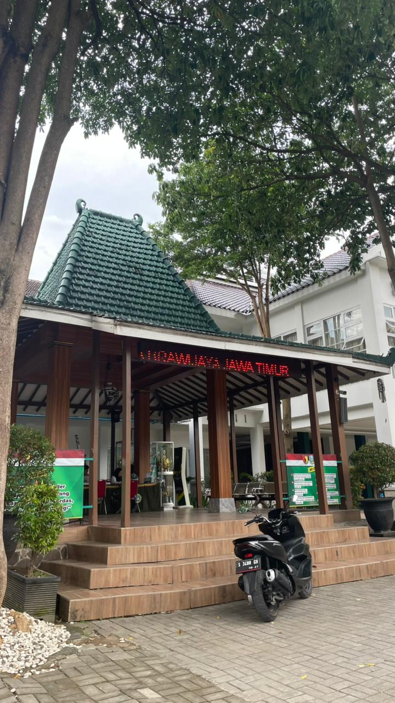
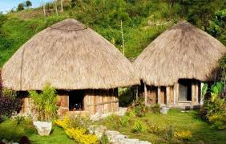

1. Rumah Gadang (Sumatra Barat)
Rumah Gadang adalah rumah adat suku Minangkabau. Rumah ini memiliki atap menyerupai tanduk kerbau. Dulunya digunakan sebagai tempat tinggal keluarga besar serta pusat kegiatan adat.

2. Rumah Joglo (Jawa Tengah)
Rumah Joglo terkenal dengan tiang utama bernama "saka guru". Rumah ini digunakan bangsawan Jawa sebagai simbol status dan tempat acara adat. 
3. Rumah Honai (Papua)
Rumah Honai terbuat dari kayu dan jerami, berbentuk bulat, dan tahan terhadap cuaca dingin. Honai adalah rumah tradisional masyarakat Papua, terutama suku Dani di Lembah Baliem. Bentuknya sangat khas: Bentuk: bulat seperti kubah. Atap: kerucut dan terbuat dari jerami atau rumput liar yang disusun rapat. Dinding: dari kayu atau papan yang tersusun vertikal. Pintu: sangat kecil, biasanya hanya satu, untuk menjaga udara dingin tidak masuk. Ventilasi: hampir tidak ada, sehingga bagian dalam hangat. Lantai: tanah yang dipadatkan. Fungsi: sebagai tempat tidur, berkumpul, sekaligus melindungi dari cuaca dingin pegunungan Papua. Ukuran: kecil, biasanya hanya berdiameter 4 sampai 6 meter dan tinggi sekitar 2,5 sampai 5"
